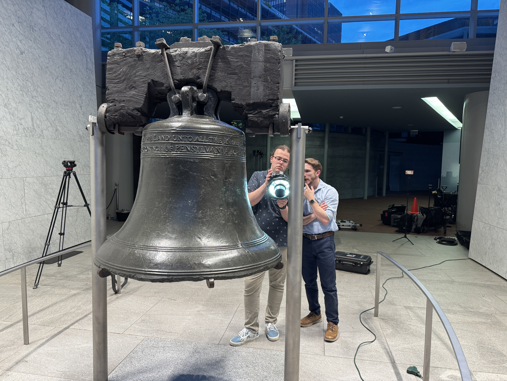
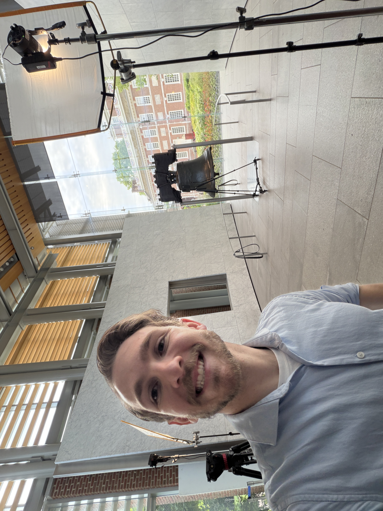

Role
Lead scan technician and post-processing specialist for a small-team on-site digitization effort.


In May 2026, I served as the lead scan technician for a small-team 3D digitization project focused on the Liberty Bell in Philadelphia. The work centered on using structured-light scanning workflows to document a nationally significant object with the precision and care required in a cultural heritage setting.
On site, I operated the scanning equipment to capture the bell's complex surface geometry, inscriptions, texture, and historically important form, including challenging areas around the crack, crown, and supporting structure. The project required coordinated movement, careful coverage planning, and close collaboration with teammates during setup, capture, and technical review.
I also led the post-processing workflow after field capture, including alignment, cleanup, mesh refinement, and preparation of digital assets for visualization and archival use. Alongside the scanning itself, I helped manage data organization and quality control so the resulting outputs would be accurate, usable, and preservation-minded.
This project reflects my interest in reality capture for cultural heritage, where technical execution, documentation discipline, and teamwork all matter just as much as the final model. It was a meaningful opportunity to apply professional 3D scanning practices in a high-profile environment where precision and respect for the subject were essential.
Lead scan technician and post-processing specialist for a small-team on-site digitization effort.
Structured-light capture, coordinated field documentation, scan alignment, cleanup, and mesh refinement.
Prepared accurate digital assets for visualization and archival-oriented use in a cultural heritage context.

